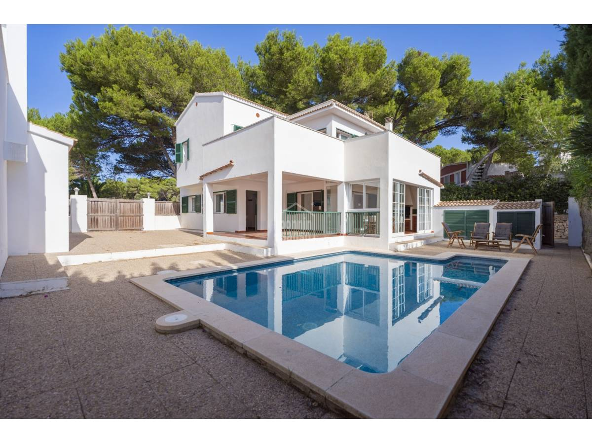

€595.000
Macaret, Es Mercadal, Menorca, Spain
Open the listingExact character brief under €600k: white Menorcan villa with dark green shutters opening to a built rectangular private pool on a pine-hedged Macaret plot near Cala Moli moorings — cozy old-with-new, not sleek-only. Distinct from board addaya/son-parc set.
Opened 10 Sep 2026. Asking 595.000 €. Specs on Bonnin card: 4 beds / 3 baths / 220 m² built + Pool. Copy: two floors; living to terrace; independent kitchen; Macaret near Cala Moli. Hero confirms green shutters, whitewash and built private pool. Not a fixer.